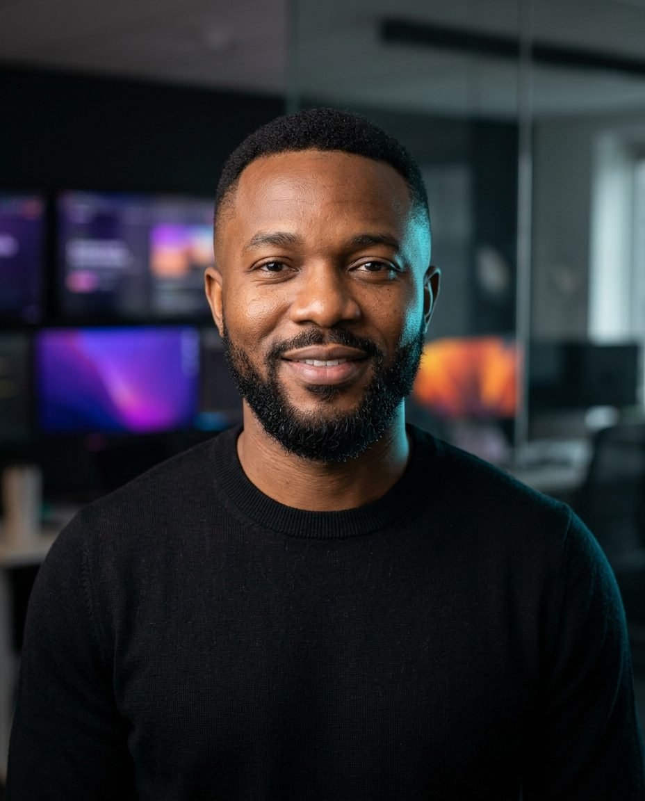

Daniel Okafor
$ whoami Head of Software Engineering · payments at scale $ cat focus.txt → Teams of 40+ engineers, 7 squads, 2 time zones → Platforms that move money and never sleep → Hiring, growing and keeping great engineers $ locate daniel Dubai · Lagos · remote-friendly

Open to CTO / VP Engineering// metrics.json
What changed under his watch
$ git log --career
Commit history
Head of Software Engineering @ Korra Commerce
Leads engineering for a pan-African and Gulf payments platform processing 9 million transactions a month. Introduced squad ownership, on-call that people don't dread, and a promotion framework.
Engineering Manager @ Fieldwise
Grew the team from 6 to 22 engineers while shipping the offline-first field-service app used by 30,000 technicians.
Senior Software Engineer @ Tidewater Labs
Built the event-streaming backbone and mentored five engineers into senior roles.
BSc Computer Science @ Lagos
First-class honours. Final project: a fraud-detection service for mobile money.
// contributions
Still writes code
1,284 contributions in the last year · maintainer of two open-source libraries
// stack.yml
Tools of the trade
Double-entry ledger as the source of truth
Every balance is derived, never stored. Reconciliation incidents dropped to zero.
Squads own services end to end
Build it, run it, improve it. Mean time to recovery fell from hours to 11 minutes.
Hiring with a work sample, not a puzzle
A paid, realistic task. Offer acceptance rose to 86%.
$ ssh daniel
Let's build something reliable
$ ./contact --role "CTO | VP Engineering" --region "GCC, Africa, remote" ✓ Daniel replies within two working days